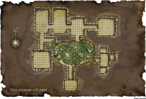
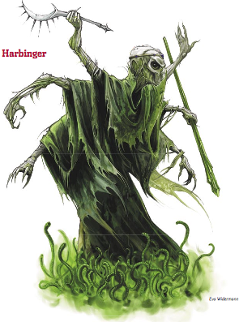

Week 35 - All the way in
This page covers week 35 and part of week 36. Jericho turns out to be an Heir of Syberris - House Orien. Meaning that he can Greater Teleport once per day. With Flash using Clairvoyance and Rary’s Telepathic Bond, this makes many obstacles less formidiable.
With the worms kept at bay with Frith’s “Repel Vermin” spell, the party looks around. To the east is a corridor ending in a door. The party elect to go thataway.
Vision: Apotheosis
The immediate surroundings waver and fade, replaced by a bird’s-eye view of the city of Kuluth-Mar at its height. The streets are empty, as the thousands of citizens seem to have gathered in a mass in the central plaza surrounding the Spire of Long Shadows. Suddenly, a foul energy wells from the spire at the center of the city, sweeping outward and felling the living as it passes. For each creature that falls, you feel a silent but potent sense of wrongness, as some indescribable part of the creature, perhaps its soul, is drawn back toward the Spire of Long Shadows to be absorbed by the strange black monolith of stone balanced at its peak. As the energy builds around the peak, a shimmering image of a colossal humanoid figure, its body composed of a million writhing worms, takes form around the Spire of Long Shadows, its arms raised in triumph. Yet in another moment, that triumphant pose seems to change to one of rage, and a soul-wrenching cry of fury tears from the undulant face. The image shrinks, pulled into the stone monolith at the Spire’s peak, imploding with a horrific wet burst. In an instant, the city is quiet again, yet as the vision fades, the first signs of unlife spread through the thousands of dead bodies strewn around the ziggurat’s base as bodies, now festering with green worms rise from death.Jericho is not quick enough to spit out all the worms, and one starts burrowing toward his brain. But Frith (or Flash) makes use of the holy symbol of the Silver Flame that was given to them long ago, and the work is destroyed.
The Holy Symbol is mechanically a wand of Remove Curse. I made it a symbol of the Silver Flame for flavour reasons. Flash uses it, as Frith does not worship the flame. At the time, Frith’s buddies gave him a few potions of Remove Disease, which also will get rid of a burrowing Kyuss worm.
It transpires that Sruggut has been here since the fall of the city. It (or “he”, if you like) was one of Kyuss’ spellcasters. For millennia, he has been studying the books of magic located in the spire and the surrounding buildings within the Obsidian Ring for the secret of teleportation.
“All these books concern necromancy. Do you desire to know how to remove a still-beating heart and replace it with a stone? It’s that volume over there - “On Circulation”. Would you care to know how to strip the flesh from a living being, and draw out the process for weeks or months of torment? Third from the bottom: “Handy tips for torturers - intermediate level”. But the simplest spell to create light? Or levitate? Not a word of it in any of these. Useless! Useless!”.
The party agree to teleport Sruggut out of the ring, on condition that he be handed over to the mage Manzorian. Thus he exchanges one prison for another, if possibly a more congenial one.
In response to questions as to why he has not aged, Sruggut replies that he is not undead, it is simply that his flesh does not age as other things do. As to the two rooms of the long sleep, he explains that the corpses were kept for experiments, but the spell on one of the rooms failed ages ago. The party asks “what spells can you cast”, and he answers that his spells are necromantic - he knows spells for creating death instantly in another, for preserving corpses, and sundry other things. He answers questions about what else is in the complex. He warns the party about the fountain, and tells them that three of the four knights of Kyuss live opposite the Sea of Worms, patiently waiting for the Age of Worms. But as to what is south of the Sea, he adresses Frith:
“I will tell you what is to the south, but you - you, godman - swear to me! Swear it by your gods, by all that you hold holy, that you will do as you have promised, that you will get me out of here!”
A bit of a moral dilemma for the party. Table-talk compared this Sruggut character to a Nazi war-criminal/scientist that potentially had valuable knowledge. So they decided to dump it in Manzorian’s lap. Hmm… . Sruggut has not aged, of course, because he is an abberation and not a natural creature. As to his spells, he can cast “Finger of Death”, but that doesn’t mean that he knows what it’s supposed to be called.
Frith swears by his Chaotic-Good gods (Hmm…) that the party will do as promised, and Sruggut reveals his final secret:
“Kyuss did not learn is arts alone. There was another - one of an ancient race called the spellweavers - who taught him. That one lives yet, in a chamber to the south of the great sea.”
Sruggut will provide no help in dealing with the Knights or the spellweaver. His fear of them is obvious. The party discuss what to do. Flash uses Shadow Walk to get the party to the surface. It seems that overnight, jericho has grown an aberrant dragonmark. And what a dragonmark! The mark of house Orien covers his whole body, from head to toe, and he has become able to peform a Greater Teleport once per day. They hatch a plan.
Royally pissing off their DM in the process. Those knights are supposed to be a tough fight. Its not nearly as bad as what happens next, though.

Vision: The Age of Worms
The room melts away into darkness as the air fills with strange and frightening whispers. It sounds as if a hundred different voices speak in a hundred different languages, but an instant later, the voices have joined into one and the language resolves into familiar words. These words speak of the prophecies of the Age of Worms, and as they speak, visions of the prophecies coming true manifest before you, allowing you to observe the events as if you were a god looking down upon a troubled world. The visions are violent and horrific. Legions of worm-eaten dead rise from soggy graves. An immense and demonic tree explodes into destructive life from the heart of an unfamiliar city. A burning comet lances down from the heavens to strike the earth in a tremendous, mushroom-shaped cloud of devastation. Another city, its town square wreathed in a cloud of black smoke filled with eyes, is held in the grip of shadows that move independently from their source. A cackling man attaches a clawed and withered hand to the bleeding stump of his arm, and the hand writhes into unholy life. A city built in the heart of a volcano suffers tragedy during a partial eruption that sees the collapse of its southeastern quadrant. As each of these scenes flash by, they are accompanied by a crushing sense of certainty—these events have already come to pass. Yet finally, the whispering voices speak of two more prophecies, and these are accompanied by blackness. “A tripartite spirit once again becomes one, and at its advice are the mighty undone,” the voices whisper. And then, “On the eve of the Age of Worms, a hero of the pit shall use his fame to gift a city to the dead.” After this, there is only silence. It would seem that two prophecies have yet to be realized.And, that’s it. There is a “thump” that reverberates through the ground. Outside, they discover that all the worms in the sea of worms are dead. There are two wormcallers, that they deal with, and they pick up Zruggut. Outside, they find that the great spire has fallen and crashed through the Obsidian Ring, shattering it. But with the death of the Harbinger, the link of Kyuss to this place is gone. It’s just an old ruin, now.
They teleport back to Manzorian. He has some news.
Lesson learned: your BBEG must have minions. One action per round is not enough, when PCs have four between them. Plus action points.